9 Impact of housing costs on household budgets
9.1 Cost burden
When incomes don’t rise along with housing costs, we can expect an increase in the number of cost-burdened households who pay more than 30 percent of their gross income on basic housing expenses. Since 2015, cost burden levels in the region decreased for some groups, while increased for others.
Data in this section come from the Comprehensive Housing Affordability Strategy (CHAS) dataset published by the U.S. Department of Housing and Urban Development. CHAS estimates are a custom tabulation of American Community Survey responses. As of August 2022, the most recent CHAS data is for the 2014-2018 5-year period.
Unless otherwise noted, all plots on this page combine data from Chesterfield County, Hanover County, Henrico County, and Richmond city.
9.1.1 Cost burden by tenure
The number of cost-burdened homeowners across the region has declined significantly since 2015, particularly in Chesterfield and Henrico counties. Hanover County and Richmond city saw smaller decreases, but the total “loss” of cost-burdened homeowners in the region still exceeded 6,300.
Meanwhile, the total number of cost-burdened renter households increased by almost 1,500, with only Hanover County seeing a small decline. Much of this growth was focused in Chesterfield County and Richmond city.
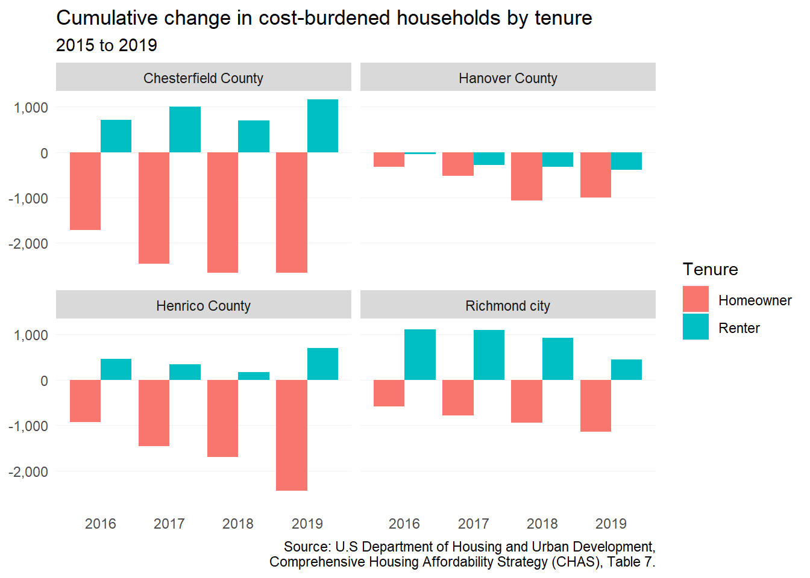
9.1.2 Cost burden by income
Homeowners above 80 percent AMI saw the largest declines in cost burden since 2016. This is likely due to rising incomes among homeowners with relatively fixed housing costs. Renters with cost burdens shifted up the income spectrum, as the number of cost-burdened renters below 30 percent AMI decreased by more than 1,400, but increased more than 2,705 among those between 30 and 100 percent AMI.
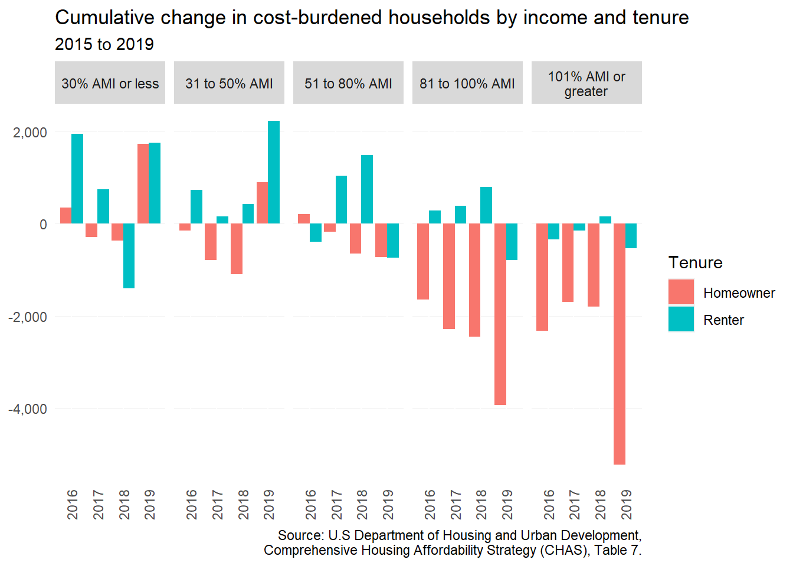
However, the significant and unexpected drop among cost-burdened renters below 30 percent AMI from 2017 to 2018 deserves further explanation. Because CHAS estimates are only current through 2018, we can use more recent ACS estimates as a comparison. This data is only available by real household income values and not AMI.
The plot below shows the ACS estimates of renter households by cost burden from 2016 to 2020. There is a steady decline in the number of cost-burdened low-income renters (under $35,000); however, this corresponds to an increasing number of cost-burdened renters with incomes between $35,000 and $75,000.
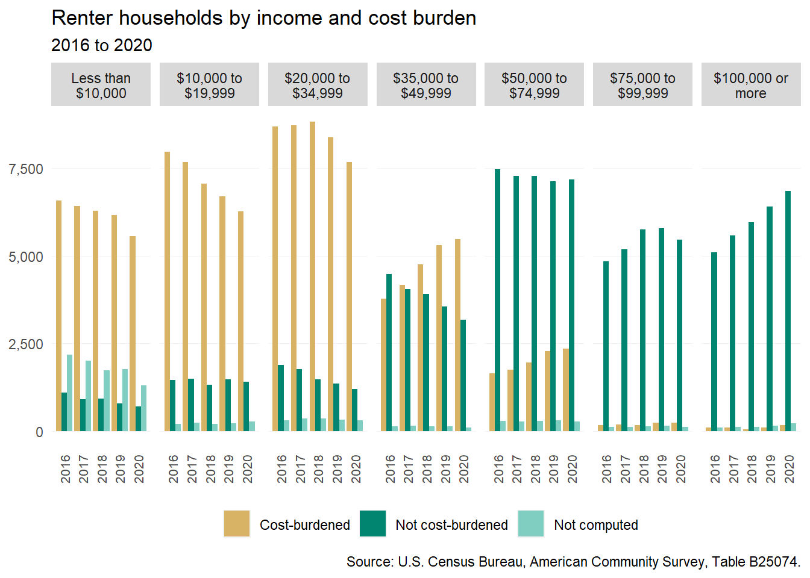
Nearly all cost-burdened renter households have incomes below $75,000. Filtering for just those estimates, the plot below shows the net annual change from 2016 to 2020. The significant decrease from 2019 to 2020 (1,057) is well beyond the range from previous changes, and may also be due in part to lower ACS response rates among lower-income households during the COVID-19 pandemic.
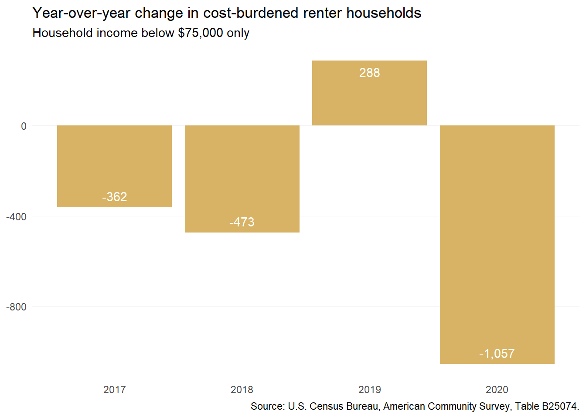
In summary, since the total number of renter households in the region has not changed significantly from 2016 to 2020, and because the supply of deeply affordable rental housing has not increased, the estimated decline in low-income cost-burdened renters is likely due to a combination of increasing average incomes “re-sorting” households into higher income categories, as well as pandemic data collection challenges.
9.1.3 Cost burden by household type
Small families and non-elderly, non-family homeowner households saw the largest decreases in cost burden across all four localities. Among renters, only small family households are now less likely to be cost-burdened, but this change (-685) is an order of magnitude smaller than the decrease for homeowner small families (-5,660).
Net increases in cost-burden were almost entirely contained to elderly non-family and elderly family households. There are now more than 3,000 additional cost-burdened households in these groups, including both homeowners and renters.
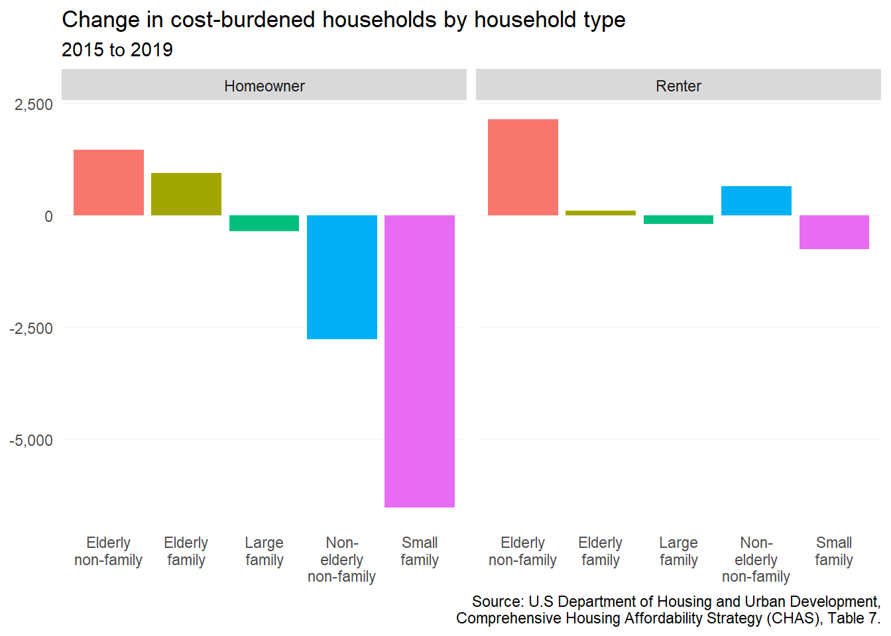
9.2 Mortgage delinquency and foreclosure
Since the Great Recession, mortgage delinquency of 90 days or more has been on a steady decline across the region —reaching the decade’s lowest rates throughout much of 2020 and 2021. Pandemic mortgage relief measures laid out in the CARES Act led to a significant forbearance program, wherein homeowners with federally-backed mortgages could enter into forbearance for a year. The decrease in delinquency can be greatly attributed to these measures which stipulated that loans in forbearance would not be reported as delinquent.
According to some researchers, this program also led to loans in delinquency prior to the pandemic entering into forbearance as well.1 Interestingly, Hanover County saw a spike in mortgage delinquency during 2018, but has since declined to the lowest rate (0.2 percent) among all localities as of December 2021.

With the moratorium on residential foreclosures having come to an end on June 30, 2022, the region may see increasing mortgage delinquency rates in the coming years.
9.3 Eviction filings and judgements
Richmond’s elevation to national prominence due to its eviction rate spurred state-level responses to address the eviction crisis across the Commonwealth. From 2017 to 2019, the region saw small declines in the number of eviction filings. The City of Richmond saw a 14 percent decrease in average annual filings, while eviction judgements only decreased by 8 percent.
For this section, we define eviction filings as the number of lawsuits generated by landlords against tenants to begin eviction proceedings. Eviction judgements are the subsequent court orders for tenants to vacate their apartment. Not every eviction case results in a judgement, and not every judgement results in a formal eviction carried out by local sheriff’s deputies.
The eviction landscape changed dramatically during the COVID-19 pandemic when the Centers for Disease Control imposed a nationwide federal moratorium on residential evictions in September 2020. In Virginia, Governor Northam requested from the state’s Supreme Court a stay on evictions preceding the nationwide moratorium several times.
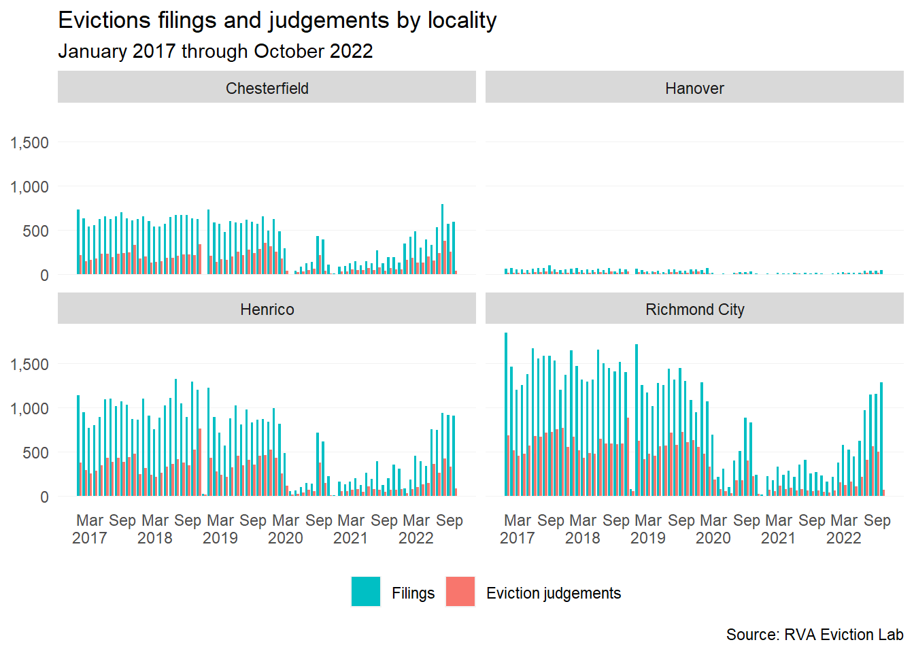
These measures led to dramatic decreases in both the number of filings and eviction judgements across the region. However, the eviction moratorium’s official end in Virginia on June 30, 2022, brings about concerns among advocates and service providers over a potential wave of evictions and homelessness in the coming months.
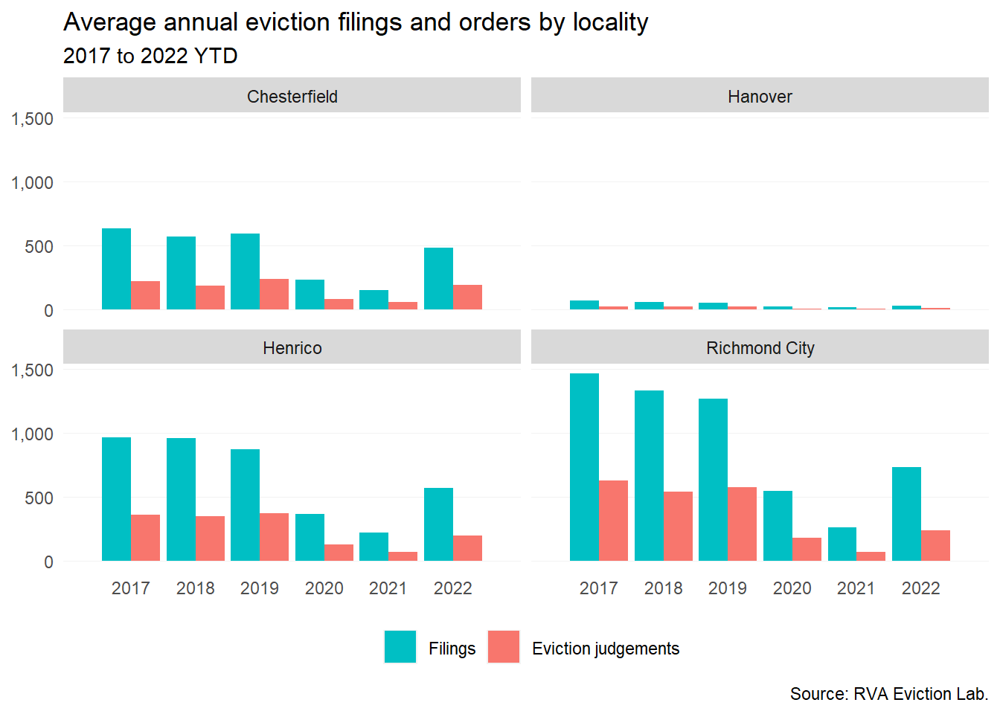
Eviction filings should continue to be monitored over the coming months. The RVA Eviction Lab has been at the forefront of this data collection and analysis, and will continue to be a resource for the region in understanding the increasing risks for renters with renter protections and resources coming to an end.
9.4 Housing Resource Line
On September 1, 2020, PHA launched the Housing Resource Line to help residents across Central Virginia in need of housing. As of July 2022, the hotline has fielded nearly 15,000 calls from people across the region—from rural Goochland County to the City of Richmond.
Call volume has remained steady over since the line’s launch. Call volume has not dropped below 500 calls per month since March 2021.
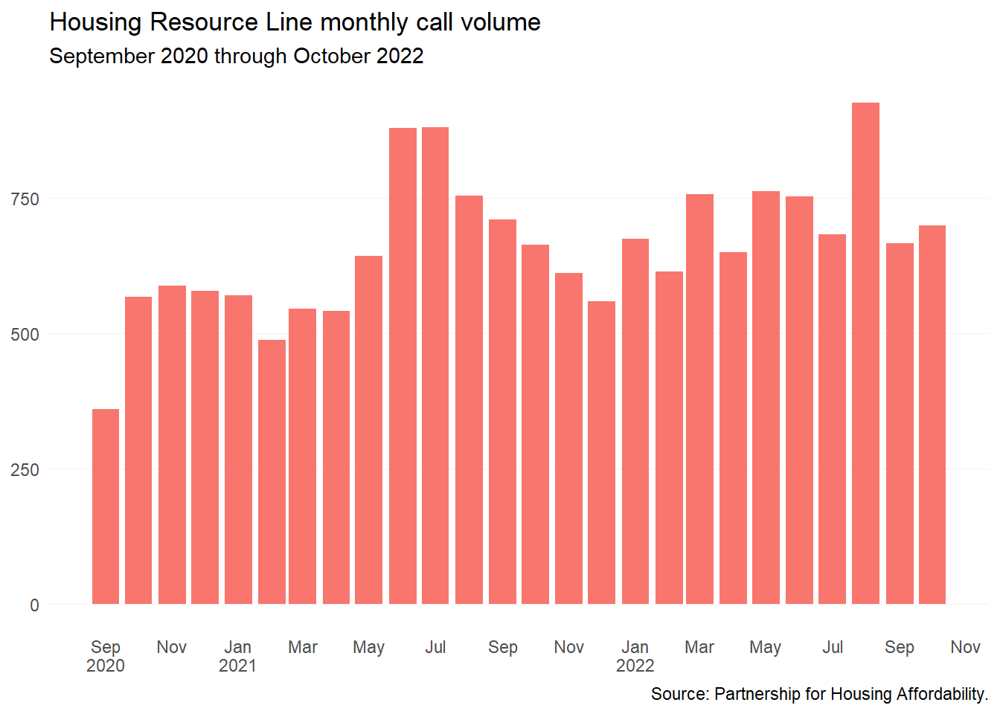
The majority of calls (56 percent) were for rental options (36 percent) and financial assistance (20 percent). The two other largest share of calls were for an option not listed (17 percent) and homelessness (13 percent).
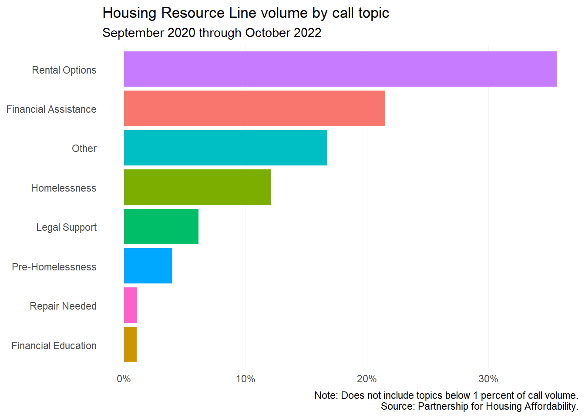
Unsurprisingly, there is an increase in homelessness calls during the colder months. PHA staff note that there is an overall increase in calls during the summer months—specifically in regards to people searching for rental options.
This uptick in rental option calls could be directly related to lease non-renewals as landlords sought to increase rents (potentially to recoup losses from the pandemic) and the increasing demand for student rental options ahead of the fall semester.
9.5 Homelessness
9.5.1 Point-in-Time counts
From 2011 to 2019, the overall count of persons experiencing homelessness across the Greater Richmond Continuum of Care (GRCoC) had been in decline.2. But when the COVID-19 pandemic hit, the count jumped—going from 497 in 2019 to 834 in 2021, a 68 percent increase.
The Urban Institute recently highlighted Homeward’s (the region’s planning and coordinating organization for the GRCoC) efforts to address homelessness during the pandemic. Their response measures served as best practice examples in preventing high transmission rates among people experiencing homelessness as well as direct service staff.
But the challenges of reducing homelessness during the pandemic were laid bare. With an eviction moratorium, rental vacancy rates reached record lows—leaving many seeking rental options with little to none. In addition, providers have also referenced landlords setting high security deposits.
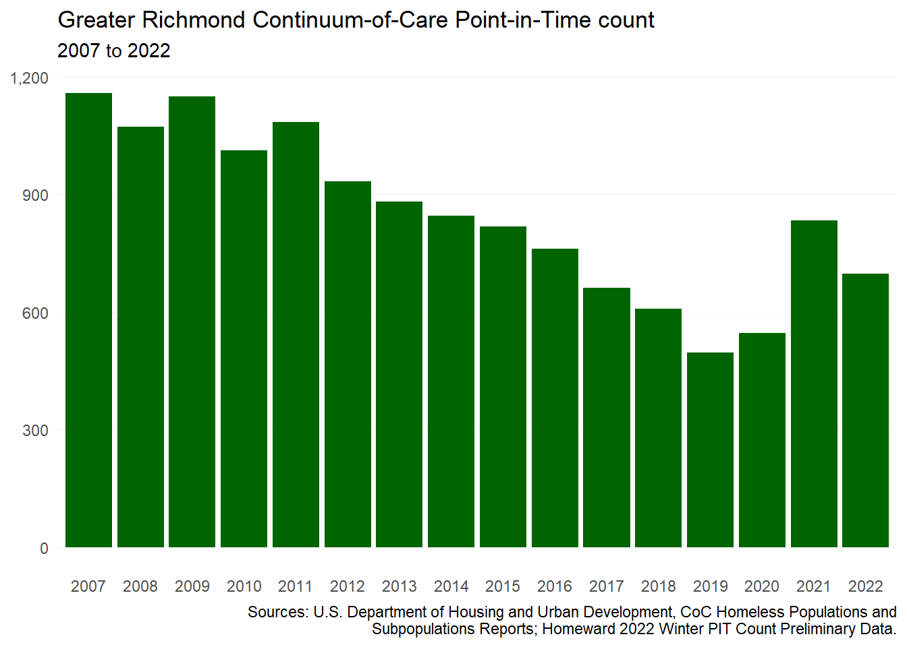
9.5.2 Students experiencing homelessness
The McKinney-Vento Education for Homeless Children and Youth (EHCY) Program collects data on students experiencing homelessness, which often can paint a different picture of homelessness when compared to the Point-in-Time counts. In the region, school divisions have been seeing varying numbers, but between the 2018-2019 and 2019-2020 school years students experiencing homelessness have declined across all school divisions.
Homeless children counted under the McKinney-Vento program are defined as “individuals who lack a fixed, regular, and adequate nighttime residence.” This includes children who are doubled-up with another households or living in motels, along with those living in shelters, vehicles, public areas, and other unsuitable places. This is more expansive than the definition used for PIT counts.
The most notable declines in student homelessness have been seen in the Richmond Public School system, where the number of students experiencing homelessness have declined by 40 percent from 2017-2018 to 2019-2020. Given the pandemic and virtual learning environments, upcoming McKinney-Vento data through the 2021-2022 school year may need require extra context.
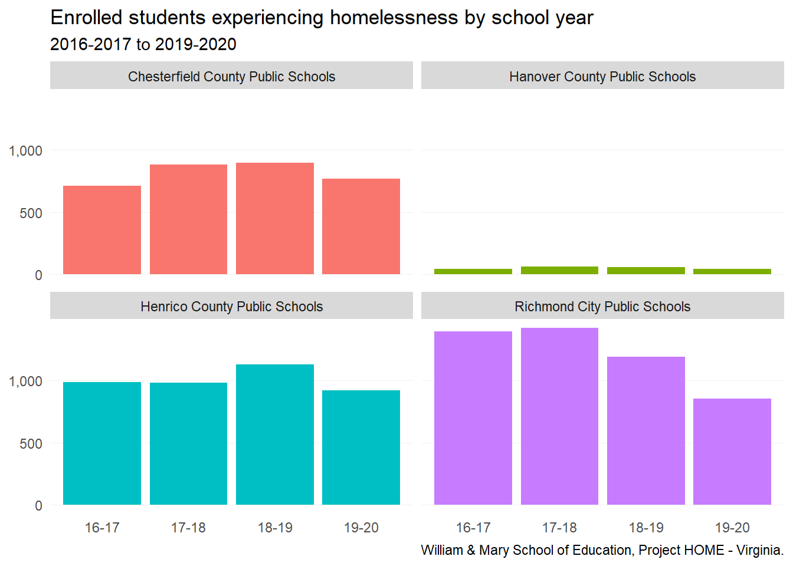
Haughwout, Lee, Scally, and van der Klaauw, 2020. https://libertystreeteconomics.newyorkfed.org/2020/11/following-borrowers-through-forbearance/↩︎
GRCoC covers City of Richmond, and the counties of Charles City, Chesterfield, Goochland, Hanover (including the town of Ashland), Henrico, New Kent, and Powhatan↩︎